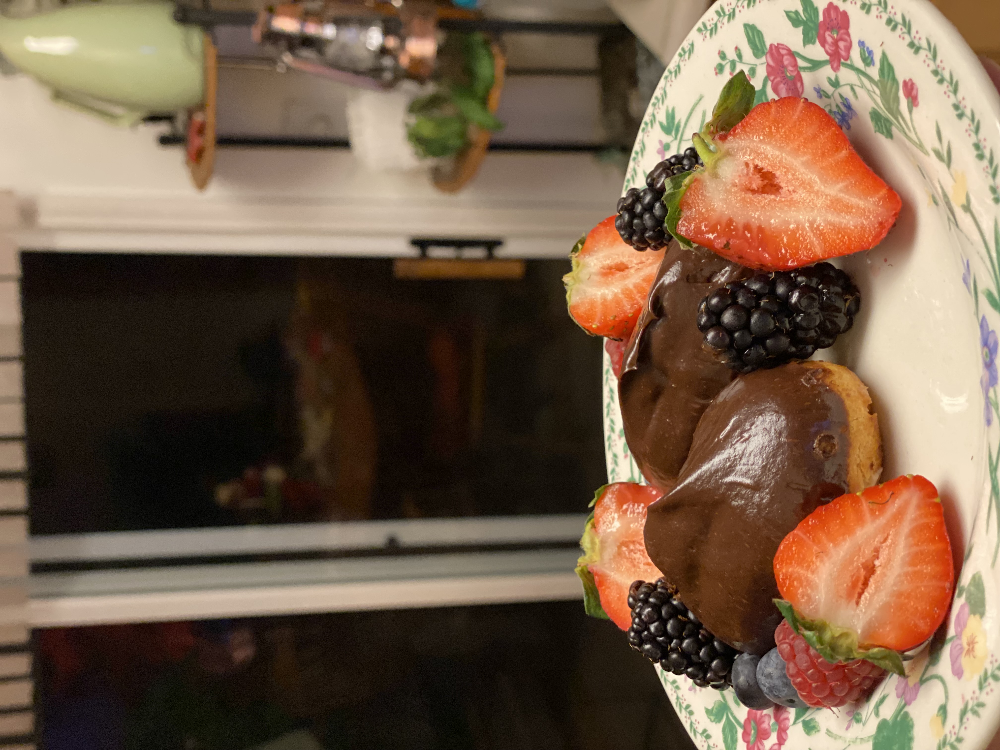
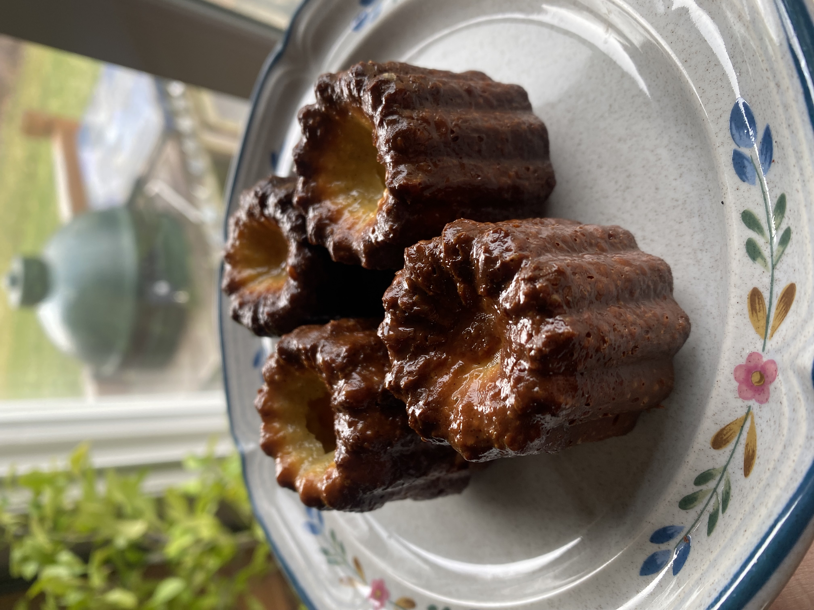
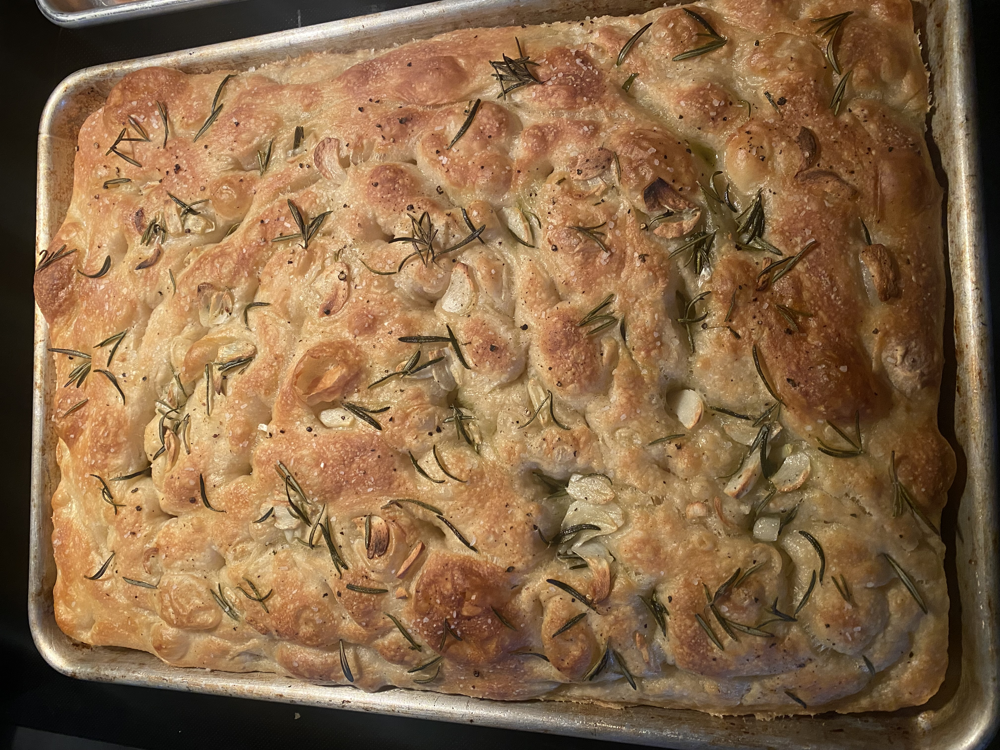
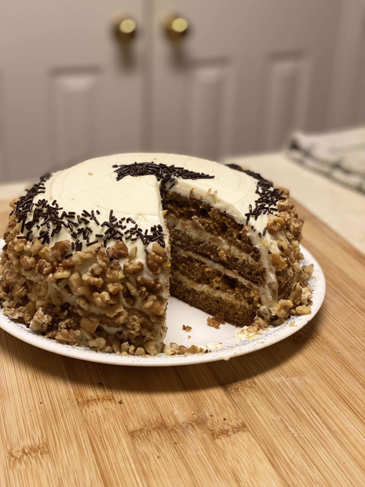
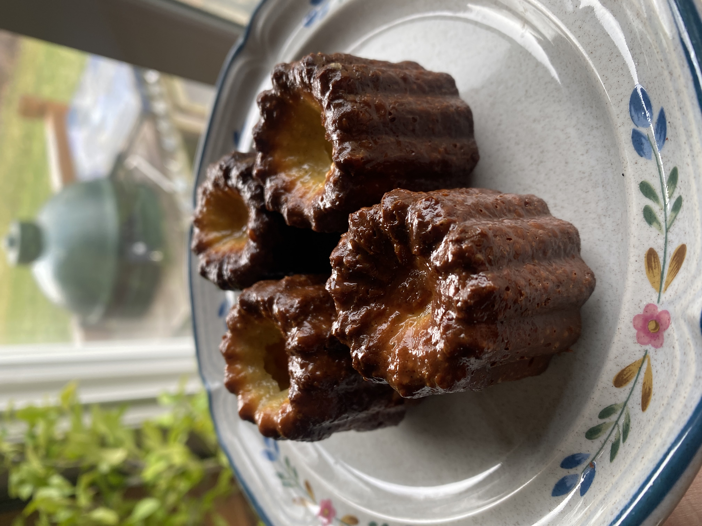
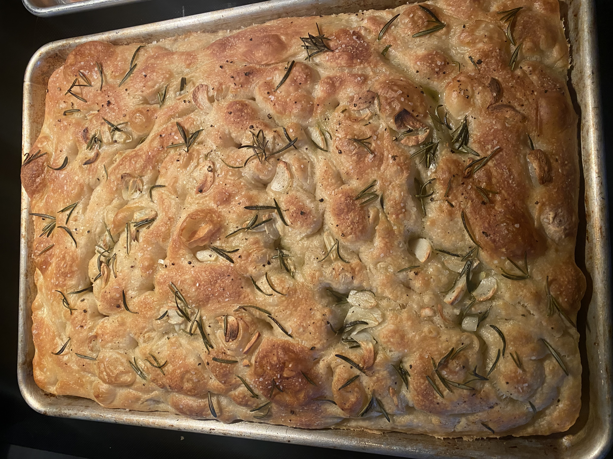
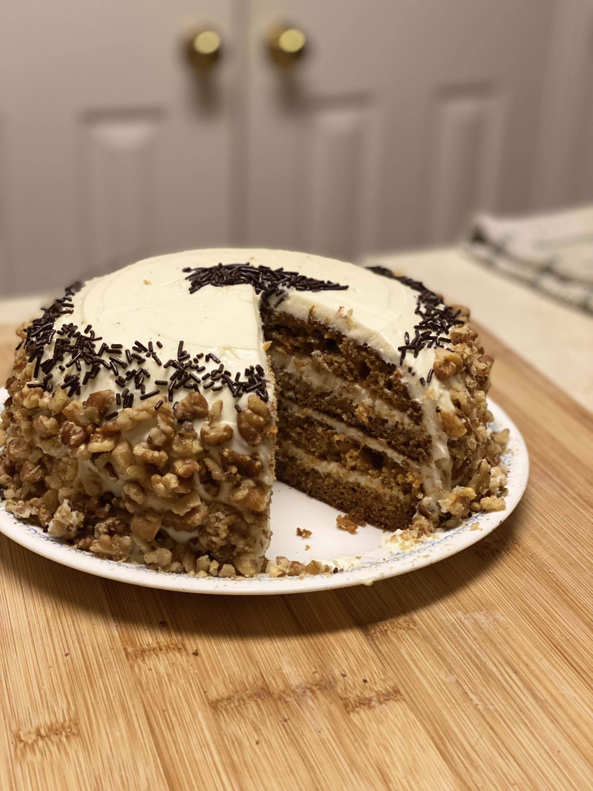
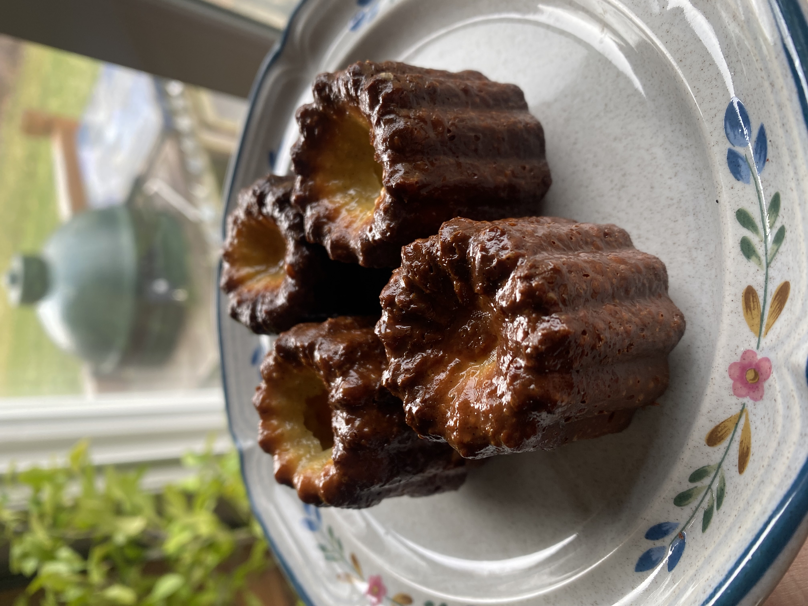
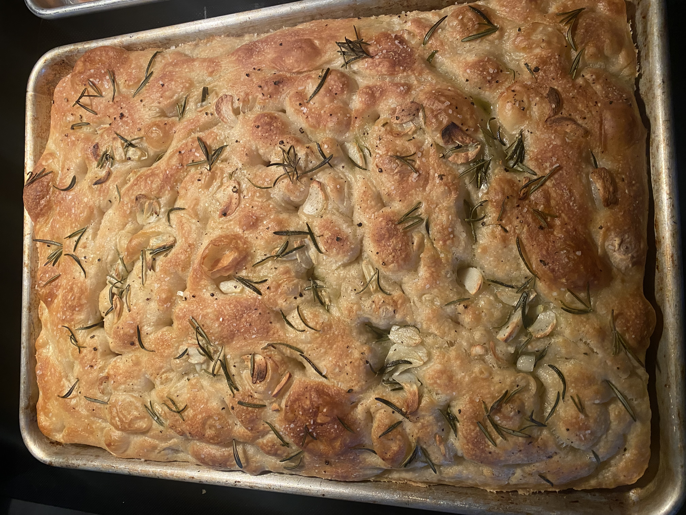
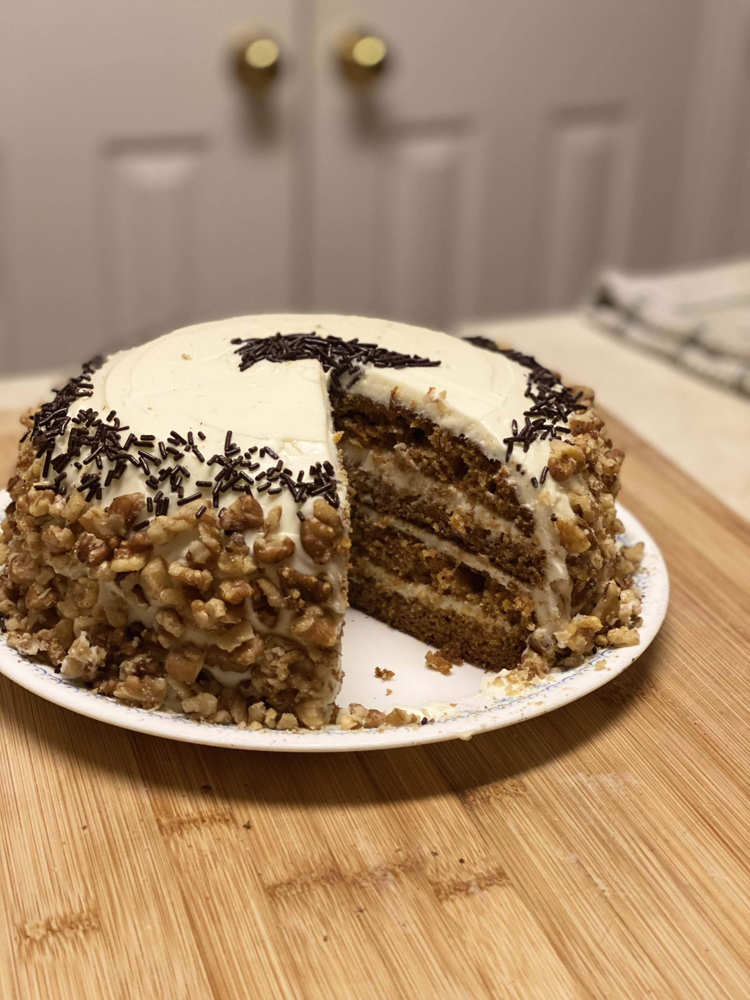

 








Recipe Resizer
New recipe
Unit Legend
Common Conversions
- 1 tablespoon = 3 teaspoons
- 1/4th cup = 4 tablespoons
- 1/3rd cup = 5 tablespoons + 1 teaspoon
- 1/2 cup = 8 tablespoons
- 1 cup = 16 tablespoons
- 1 cup = 240 mL
- 1 oz = 28 g
- 1 cup = 16 tablespoons
- 1 cup = 1/2 pint
- 1 teaspoon = 5ml
- 1 tablespoon = 15ml
Common Ingredient Weight
- 1 cup of all-purpose flour = 120g
- 1 cup of granulated sugar = 200g
- 1 cup of dark brown sugar(packed) = 200g
- 1 cup of light brown sugar(packed) = 200g
- 1 cup of butter = 227g
- 1 stick of butter = 113g
- 1 large egg = 60g
- 1 large egg white = 30g
- 1 large egg yolk - 30g
My Favorite Recipes!
These are some of the recipe's that I tend to make the most often, or ones that I had the most fun making
Ingredients
- 2 Vanilla Beans
- 500ml of cold Whole Milk
- 200g Cane Sugar
- 100g of All-Purpose Flour
- 50g of Butter
- 2 Large Eggs
- 2 Large Egg Yolks
- 60ml Dark Rum
- 40g Beeswax (Mold Coating)
- 60g Butter (Mold Coating)
- 300g of All-Purpose Flour
- 450g of Shredded Carrots
- 335g of Granulated Sugar
- 2/3rd tsp of Cinnamon
- 1/2 tsp of All-Spice
- 1/4th tsp of Ginger
- 1/2 tsp of Cardamom
- 2 tsp of Baking Powder
- 2 tsp of Baking Soda
- 1 and 1/2 tsp of salt
- 3 Large Eggs
- 180ml of Sour Cream
- 120ml of Apple Sauc
- 180ml of Vegetable Oil
- 452g of Colder Room Temp Full Fat Cream Cheese
- 340g of Colder Unsalted Butter
- 1 tsp of Vanilla Extract
- 350g of Confectioners Sugar
- 2 tsp of Vanilla Extract
- 2 and 1/4th tsp of Active Dry Yeast
- 780g of Bread Flour
- 2 tbsp of Salt
- 1 cup of Olive Oil
- 580g of All-Purpose Flour
- 107g of Granulated Sugar
- 6g of Fine Sea Salt
- 7g of Instant Yeast
- 235g of Lukewarm Whole Milk
- 84g of Unsalted Butter
- 2 Large Eggs and 1 Egg Yolk
- 225g of Brown Sugar
- 17g of Cinnamon
- 90g of Powdered Sugar
- 1/2 of Vanilla Bean
- 115g of Full Fat Cream Cheese
- 3 tbsp of Whole Milk
- 1 Vanilla Bean
- 135g Cane Sugar
- 34g of Corn Starch
- 14g of Unsalted Butter
- 6 Large Egg Yolks
- 480ml of Whole Milk
- 70g of Bread Flour
- 1/4th tsp of Salt
- 1 tsp of Cane Sugar
- 60g of Water
- 60g of Whole Milk
- 4 Eggs
- 60g of Unsalted Butter
Instructions
- Remove seeds from vanilla pod. Add the seeds, pods, and milk in a sauce pan. Bring to a gentle simmer
- In a different bowl whisk sugar and eggs till combined, then add the melted butter till also combined
- Strain liquid in saucepan into egg, sugar, and butter mixture. Make sure to temper the eggs with the milk as to not cook the eggs
- Sift the flour into the bowl and mix till combined
- Add the rum and incorporate it
- Refrigerate for 3 days to hydrate the flour
- When it is time to back, preheat oven to 550 or as high as you can get it
- Melt butter and beeswax, then pour it into the molds leaving 1 cm from the top, and then quickly pour it back out. Do that for all of the molds
- Fill the molds with 60g of batter, place them on a baking sheet and leave them in 550 for 10 minutes, then drop temperature to 375 and continue baking for 45-50 minutes
- Take them out of the oven, remove them from the molds upside down on a baking rack and let cool for 2 hours
- First, butter 3 8 inch cake pans and line them with parchment paper cut into a circle
- Drop a tsp of flour into each cake pan, and toss to coat
- Shred the carrots and then put them aside
- Under a sifter, add all dry ingredients to a bowl and whisk together
- In another bowl, mix all of the wet ingredients and then whisk together
- Add wet into the dry and fold in. Fold until you just stop seeinf any streaks of dry> Its oaky if a little lumpy
- Equally add to each cake pan and place in the oven at 350F for 40-45 minutes until straw comes out 90% clean
- For the frosting, mix the butter and cream cheese together with a whisk and when it is 3/5th combined add the confectioner's sugar until fully incorportated
- In 113g of luke warm water activate the yeast
- Add it to stand mixer, along with 567g of room temperature water, the the flour and salt
- Mix on low speed until loose dough comes together, then increase speed to medium-high for 5 minutes so that the dough looks smooth and wraps around the hook
- Let rest for 15 minutes under a damp towel, then turn it back up to medium-high speed for 10-15 minutes or until the dough is pulling awat from the sides
- Pour 1/4th of the oil in a large bowl and swirl to coat. Place dough in bowl, then when the oil starts rising, gentley dab some of the oil over the top to coat
- Let the dough proof for 1 hr and 30 min
- Drizzle another 1/4th of oil in a half-sheet pan and coat it. Then with oiled hands, pick up a chunk from the corner of the dough and let the weight of it fall into the center. Do that for the other 3 corners as well
- Now place it on to the sheet pan and start to stretch the dough in all directions, but not to fully cover just to start the process
- Let proof a second time in fridge overnight
- If its not double the height, let it sit at room temperature until it does. Then stretch it out to fit all sides of the pan
- Pour the remaining oil over the dough and dimple
- Bake at 450F for 20-25 minutes on bottom rack, then transfer to top rack for 5 minutes. Let it cool for 10 minutes before serving
- In a stand mixer, whisk together all-purpose flour, granulated sugar, and fine sea salt
- Add in softened butter and blend in using two forks
- In a separate container, whisk together lukewarm whole milk and yeast
- Using the doughhook attachment, set to medium-low, add in yeast mixture, eggs, and mix for 2-3 minutes
- On a lightly-floured work surface, knead for 60 seconds, plop in a greased bowl and let rise for 90 minutes
- Once dough is ready, mix the cinnamon and brown sugar to make the filling
- Dump dough on a lightly floured work surface and roll it into a rectangle
- Spread softened unsalted butter all over the dough and evenly spread the filling
- Tightly roll and slice into 12 2 inch segments
- Grease a 9x13 baking dish, add rolls, and let rise for 40 minutes
- Pour some heavy cream above rolls, and bake in a 375F oven for 15-20 minutes and let cool for another 15
- Whip the cream cheese until smooth, add powdered sugar until combined, mix in whole milk, then pour over cinnamon rolls
- Place vanilla bean, butter, and milk into a sauce pan and simmer for 5 minutes. Take off heat and set aside
- In a bowl add the eggs, sugar, and salt and whisk until combines/pale yellow
- Sift in cornstarch and keep whisking till incorportated
- Temper the batter with the milk, then finish pouring. Strain mixuture into a pot and on medium heat whisk until it thickens up
- Take off heat, pour into a glass bowl and line with plastic wrap so it is directly covering the cream in order to not develop a skin
- Put in fridge overnight and before piping, make sure to whisk it so it is maleable
- For the Choux, place butter, milk, salt, and sugar into a sauce pan over medium heat
- As soon as it starts to boil, remove from heat, add the sifted flour and mix intensely until it forms one smooth ball
- Place back on heat and cook dough for 3 minutes by mixing constantly to evaporate the water
- Transfer dough into stand mixer bowl and whisk on low speed with paddle attachment to let the dough cool a bit
- Start adding lightly whisked eggs until dough is a glossy and pipeable consistency
- Move dough into a pastry bag and pipe onto a sheet pan and dust with powdered sugar. Bake at 338F for 4o minutes. Let cool then fill with pastry cream
- For the ganache, double boil dark chocolate with some butter until it reaches a slightly thick consistency
- Dip the top of the eclair in the ganache and you are done!.